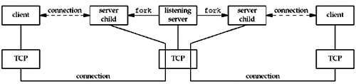
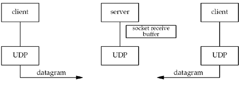

| [ Team LiB ] |
|
8.4 UDP Echo Server: dg_echo FunctionFigure 8.4 shows the dg_echo function. Figure 8.4 dg_echo function: echo lines on a datagram socket.lib/dg_echo.c
1 #include "unp.h"
2 void
3 dg_echo(int sockfd, SA *pcliaddr, socklen_t clilen)
4 {
5 int n;
6 socklen_t len;
7 char mesg[MAXLINE];
8 for ( ; ; ) {
9 len = clilen;
10 n = Recvfrom(sockfd, mesg, MAXLINE, 0, pcliaddr, &len);
11 Sendto(sockfd, mesg, n, 0, pcliaddr, len);
12 }
13 }
Read datagram, echo back to sender8–12 This function is a simple loop that reads the next datagram arriving at the server's port using recvfrom and sends it back using sendto. Despite the simplicity of this function, there are numerous details to consider. First, this function never terminates. Since UDP is a connectionless protocol, there is nothing like an EOF as we have with TCP. Next, this function provides an iterative server, not a concurrent server as we had with TCP. There is no call to fork, so a single server process handles any and all clients. In general, most TCP servers are concurrent and most UDP servers are iterative. There is implied queuing taking place in the UDP layer for this socket. Indeed, each UDP socket has a receive buffer and each datagram that arrives for this socket is placed in that socket receive buffer. When the process calls recvfrom, the next datagram from the buffer is returned to the process in a first-in, first-out (FIFO) order. This way, if multiple datagrams arrive for the socket before the process can read what's already queued for the socket, the arriving datagrams are just added to the socket receive buffer. But, this buffer has a limited size. We discussed this size and how to increase it with the SO_RCVBUF socket option in Section 7.5. Figure 8.5 summarizes our TCP client/server from Chapter 5 when two clients establish connections with the server. Figure 8.5. Summary of TCP client/server with two clients. There are two connected sockets and each of the two connected sockets on the server host has its own socket receive buffer. Figure 8.6 shows the scenario when two clients send datagrams to our UDP server. Figure 8.6. Summary of UDP client/server with two clients. There is only one server process and it has a single socket on which it receives all arriving datagrams and sends all responses. That socket has a receive buffer into which all arriving datagrams are placed. The main function in Figure 8.3 is protocol-dependent (it creates a socket of protocol AF_INET and allocates and initializes an IPv4 socket address structure), but the dg_echo function is protocol-independent. The reason dg_echo is protocol-independent is because the caller (the main function in our case) must allocate a socket address structure of the correct size, and a pointer to this structure, along with its size, are passed as arguments to dg_echo. The function dg_echo never looks inside this protocol-dependent structure: It simply passes a pointer to the structure to recvfrom and sendto. recvfrom fills this structure with the IP address and port number of the client, and since the same pointer (pcliaddr) is then passed to sendto as the destination address, this is how the datagram is echoed back to the client that sent the datagram. |
| [ Team LiB ] |
|